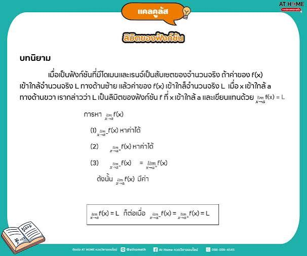

แคลคูลัส

แคลคูลัส (Calculus) ถือเป็นแกนสันหลังของคณิตศาสตร์สมัยใหม่ คำว่า "Calculus" มาจากภาษาละตินแปลว่าก้อนหินเล็กๆ ที่ใช้ในการนับในทางคณิตศาสตร์ ศาสตร์นี้ถูกพัฒนาขึ้นเพื่อตอบคำถามที่พีชคณิตหรือเรขาคณิตแบบเดิมตอบไม่ได้ เช่น การเคลื่อนที่ของวัตถุที่มีความเร็วไม่คงที่ หรือการหาพื้นที่ของรูปทรงที่มีเส้นโค้งซับซ้อน